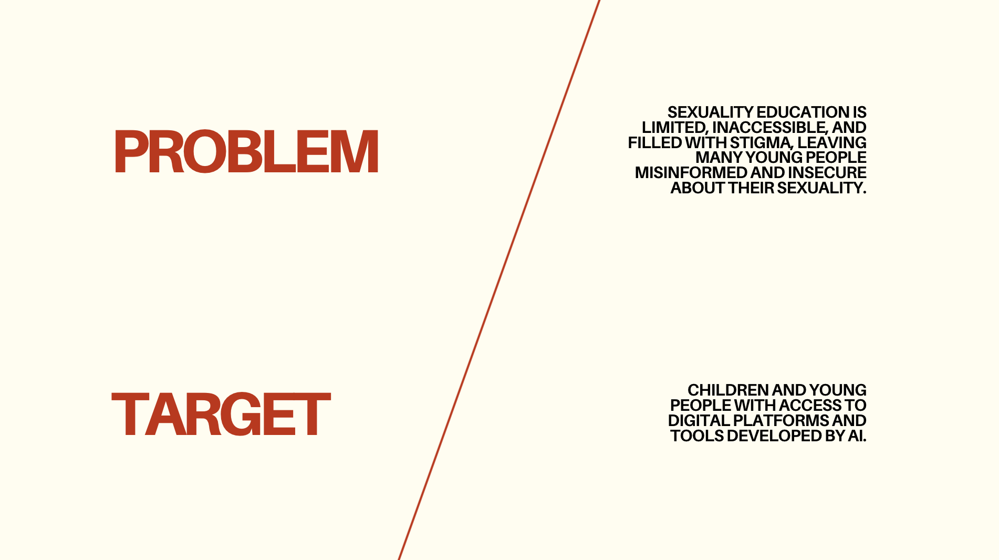
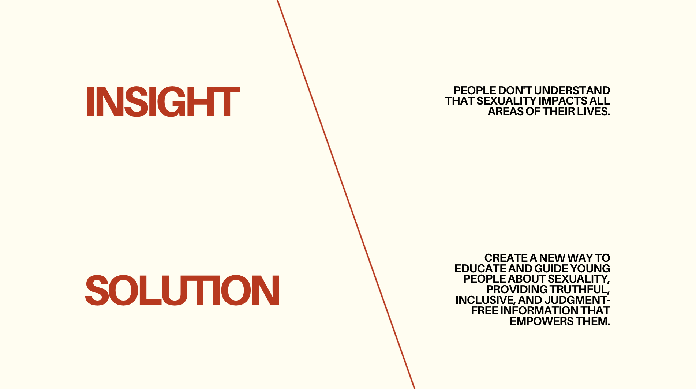
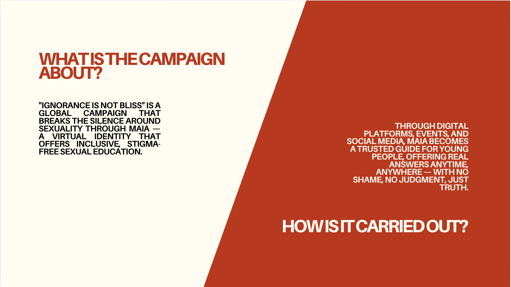
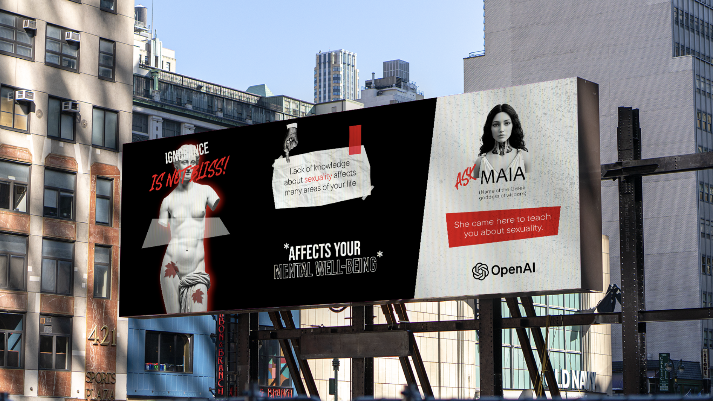

Open AI
Este proyecto presentó un alto nivel de complejidad debido a la sensibilidad del tema abordado. El mayor desafío fue desarrollar una propuesta que comunique educación sexual de manera accesible, confiable y libre de prejuicios. La creación de Maia como identidad virtual implicó un proceso conceptual profundo enfocado en generar confianza. En el diseño, se buscó construir una identidad que equilibre lo tecnológico con lo humano, transmitiendo cercanía y seguridad.



